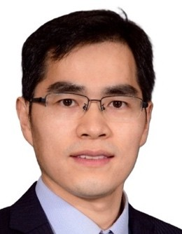
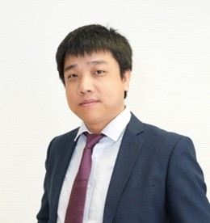
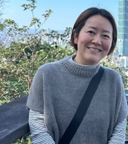

Speakers

Prof. Pranav Rajpurkar, PhD, is an Assistant Professor at Harvard University and a researcher in the field of medical artificial intelligence. With a focus on medical image interpretation, Dr. Rajpurkar's research lab strives to develop AI models that can match the proficiency of top-tier medical doctors. His research group is at the forefront of developing "Generalist Medical AI" systems that can closely resemble doctors in their ability to reason through a wide range of medical tasks, incorporate multiple data modalities, and communicate in natural language. He has written over 100 academic articles with more than 24K citations in notable journals like Nature, NEJM, and Nature Medicine. His work has been recognized by MIT Tech Review's Innovator Under 35 in 2023, Nature Medicine Early-career Researcher To Watch in 2022, and the Google Research Scholar Program in 2023, Forbes 30 Under 30 in 2022. Dr. Rajpurkar leads educational initiatives including the Harvard-Stanford Medical AI Bootcamp Program, and CS197: AI Research Experiences at Harvard.

Prof. Ruijiang Li is an Associate Professor of Radiation Oncology at Stanford University School of Medicine. He is also a faculty member of Stanford Institute of Human-Centered Artificial Intelligence and Stanford Cancer Institute. Dr. Li’s research is focused on AI for precision oncology, specifically developing digital pathology and imaging-based biomarkers to predict treatment response and patient outcomes. As the senior author, Dr. Li has published research articles in Nature, Nature Machine Intelligence, Nature Communications, Cell Reports Medicine as well as high-impact medical journals including Journal of Clinical Oncology, Annals of Oncology, JAMA Oncology, Lancet Digital Health, Annals of Surgery. Dr. Li has been the Principal Investigator on a total of 7 NIH R01 grants and has served on numerous NIH study sections and grant review panels. Dr. Li has received nationally recognized awards, including the NIH Pathway to Independence Award and ASTRO Clinical/Basic Science Research Award.

Mr. Dennis Lee currently serves as the Business Development Manager under EHP Digital. He is currently helping to setup the Data Services offering and the corresponding product and services portfolio to unlock healthcare technology and capabilities HA and IT&HI have developed in many years. Before the current role, Dennis had been the Senior System Manager for Artificial Intelligence Systems of the Hong Kong Hospital Authority. His past work involved developing the Artificial Intelligence and Big Data Platform to streamline data acquisition for facilitating HA data analysis, develop Hospital Command Center dashboards, and solution deployment for Artificial Intelligence. Mr. Lee led the AI Lab, AI delivery Center, and also Data Collaboration Lab.

Prof. Dong Liang is a Full Professor and Vice Director of the Paul C. Lauterbur Research Center for Biomedical Imaging at the Shenzhen Institutes of Advanced Technology (SIAT), Chinese Academy of Sciences. He also leads research at the Research Center for Medical AI, focusing on compressed sensing (CS), magnetic resonance imaging (MRI), and machine learning for biomedical applications. With 100+ publications in top-tier journals and conferences, his work advances fast MRI reconstruction, AI-driven medical imaging, and computational diagnostics. He is a recipient of multiple awards, including the first prize of the National Science and Technology Progress Award (2021). Prof. Liang holds prestigious editorial roles, including Associate Editor of IEEE Transactions on Medical Imaging and Editorial Board Member of Magnetic Resonance in Medicine—two leading journals in medical imaging. His research bridges cutting-edge AI methodologies with clinical imaging to improve speed, accuracy, and diagnostic capabilities.

Prof. Xiaomin Ouyang is an Assistant Professor at the Department of Computer Science & Engineering, Hong Kong University of Science and Technology. Previously, she was a postdoctoral researcher at UCLA and received her Ph.D. degree from CUHK in 2023. Her research interests include embedded AI, Internet of Things (IoT), and smart health, with a primary focus on building AI-powered mobile and IoT systems for home and community-based healthcare. She received Distinguished TPC members at ACM SenSys 2025, ACM MobiSys 2023 Best Paper Award and ACM SIGBED China Outstanding Doctoral Dissertation Award. She was named one of EECS Rising Stars in 2023 and mHealth Scholars by NIH in the U.S. in 2024. She has served on the technical program committees and organizing committees of top conferences in mobile computing and IoT, including ACM MobiCom, MobiSys, and SenSys.
Dr. Cheong Kin Ronald Chan is a Consultant at the Hospital Authority, NTEC (Pathology), and Lab Director of North District Hospital, as well as an Honorary Clinical Associate Professor at the Department of Anatomical and Cellular Pathology, The Chinese University of Hong Kong. He leads the Pathology Artificial Intelligence Development and Assessment Laboratory. Dr. Chan has published numerous papers in reputable journals and conferences, contributing significantly to the fields of digital pathology and artificial intelligence. His work includes over 30 publications, with notable journals such as Diagnostic Cytopathology, The Oncologist, and Advanced Science. He has received several awards, including the Teachers of the Year Awards from the Faculty of Medicine, CUHK in 2021 and 2023. Dr. Chan has also been involved in multiple grants related to digital pathology and AI, serving as Principal Investigator on several key projects.

Prof. Chen Qin is an Assistant Professor in Computer Vision and Machine Learning at Department of Electrical and Electronic Engineering and I-X, Imperial College London. She obtained her Ph.D. in Computing Research from Imperial College London in January 2020. Dr Qin's research is at the intersection between machine learning and medical imaging, with focus on the development of effective and trustworthy machine learning algorithms for medical image computing and analysis, including MR image reconstruction, medical image segmentation and registration, and integration of imaging and non-imaging data, with clinical applications in neurology and cardiovascular medicine. Overall, she has published more than 80 papers in top-tier peer-reviewed engineering and medical imaging journals and conference proceedings (Google Scholar citation: 4486, h-index: 29), such as in IEEE-TMI, MedIA, MICCAI, IPMI, CVPR, ECCV, etc. She was awarded the UKRI EPSRC New Investigator Award. She serves as the Associate Editor for SPIE Journal of Medical Imaging and Journal of Pattern Recognition and the Guest Editor for Magnetic Resonance Materials in Physics, Biology and Medicine, Journal of Machine Learning for Biomedical Imaging (MELBA), and Frontiers in Medicine. She has also served as an area chair for MICCAI 2022-24, a session chair for MICCAI/ISMRM/CMR and a member of organising and programme committee at several international workshops, e.g., CMRxRecon 2023-25 and UNSURE 2022-25.

Prof. Zheng LI received his B.S and M.S degrees in Mechanical Engineering from Beihang University, China, and his Ph.D. degree in Mechanical and Automation Engineering from The Chinese University of Hong Kong, Hong Kong SAR. After that, he joined the National University of Singapore as a research fellow. Currently, he is an associate professor in the department of surgery, Multi-scale Medical Robotics Centre, Chow Yuk Ho Technology Centre for Innovative Medicine, and Li Ka Shing Institute of Health Sciences, The Chinese University of Hong Kong. His research mainly focuses on the area of intelligent medical robots, including flexible surgical robots, magnetically actuated medical robots, and soft medical robots/devices. He is a senior member of IEEE, and a member of ASME, RAS, and EMBS. In the past years, he served as topic editor of Frontiers of Robotics & AI, IEEE BioRob, and associate editor of TMRB, RA-L, ICRA, IROS, RoboSoft, BioRob, etc. In addition, he is a committee member of several conferences, such as Robio, ICIA, and CCECE, and a reviewer of journals, including Advanced Sciences, Science Advances, IEEE TRO, SORO, IJRR, IEEE/ASME T-MECH, Cybernetics, TIE, etc. He is the author of one book, three book chapters, over 180 peer-reviewed journal/conference papers, and several patents/copyrights with several been licensed. He received the WIPO National Award for Inventors, Gold of International Exhibition of Inventions Geneva, Gold of International Invention Fair in the Middle East, Gold of Emedic Global 2019, WRRC 2024 best paper award, IEEE Robio 2022 best paper in robotics, IEEE CCECE 2015 conference paper award, best paper finalist of IEEE Robio 2012, and best poster finalist of IEEE ICRA 2017, etc.

Prof. Xin Wang is an Associate Professor at the Department of Surgery, Chinese University of Hong Kong, directing the Division of Biomedical Informatics and MPhil-PhD Programme in Translational Genomics. He is currently also leading the Laboratory of Translational Bioinformatics at LI Ka Shing Institute of Health Sciences as a Principal Investigator. He obtained his PhD in 2014 from the University of Cambridge Department of Oncology and Cancer Research UK Cambridge Institute. From 2013 to 2015, Prof. Wang did his postdoctoral research at the Department of Biomedical Informatics, Harvard Medical School. Prof. Wang’s major research field is cancer bioinformatics. Since 2012, he has been focusing on mechanistic and translational research in major human cancers by developing novel methodologies integrating bioinformatics, systems biology, machine learning and artificial intelligence. His group has also been dedicating to multi-center studies about molecular and image-based biomarkers for cancer early detection, diagnosis, prognosis and subtyping. Prof. Wang published > 90 papers in well-known journals such as Nature Medicine, Gastroenterology, Science Advances, and Nature Communications, with > 12,000 citations. His work is currently supported by significant research funds by Research Grants Council of Hong Kong, Shenzhen City and Guangdong Province, as well as National Natural Science Foundation of China.

Dr. Yang Cheng is Senior Director and Head of Data Science at AstraZeneca R&D China, with a background in medical and bioinformatics. Yang has led a broad portfolio of data science initiatives aimed at advancing drug discovery and development through innovative analytics and informatics platform development. She is particularly interested in harnessing molecular insights and real-world data to inform clinical development decision-making and support more personalized approaches to treatment. Throughout her career, Yang has held leadership roles in informatics and data science at several pharmaceutical R&D organizations, including Novartis Institute for Biomedical Research and Johnson & Johnson Innovative Medicine R&D. In these positions, she has led teams collaborating with multidisciplinary partners to integrate advanced analytics and data-driven strategies into the drug discovery and development pipeline. Yang values the opportunity to work with colleagues across diverse sectors and share her insights within academic and professional communities. She is grateful to participate in this conference and looks forward to learning from peers and contributing to the exchange of ideas in the field.